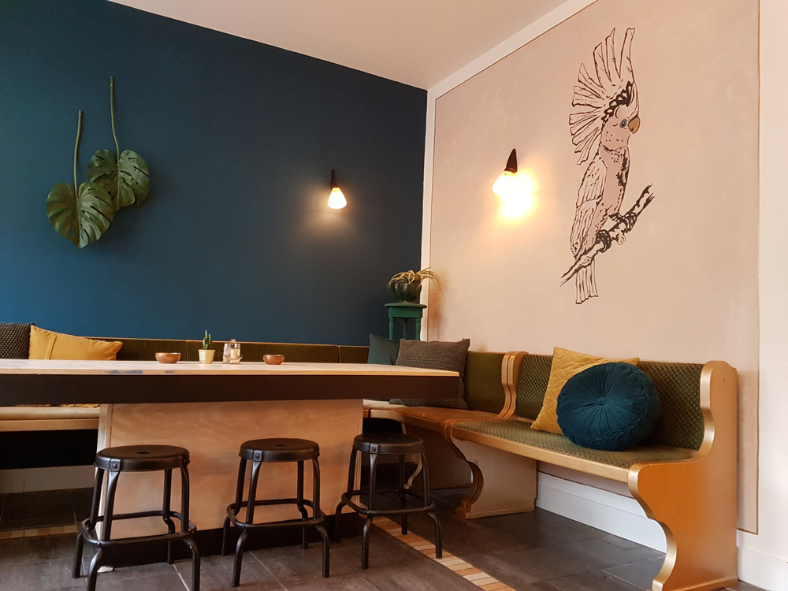

Iets te vieren? Vier het bij Senang Makan
U kunt het restaurant afhuren voor uw feest, receptie of bedrijfsuitje. Senang Makan verzorgt de hapjes, de drank en de maaltijden voor uw gezelschap, en in de zomer kunt u ook genieten op het terras in de achtertuin.
In een persoonlijk gesprek bespreken we de opties in drank- en hapjesarrangementen, zodat we samen tot een geslaagde middag of avond komen. Ook hebben we contacten voor bloemdecoraties, dj’s en meer.
Vraag naar de mogelijkheden